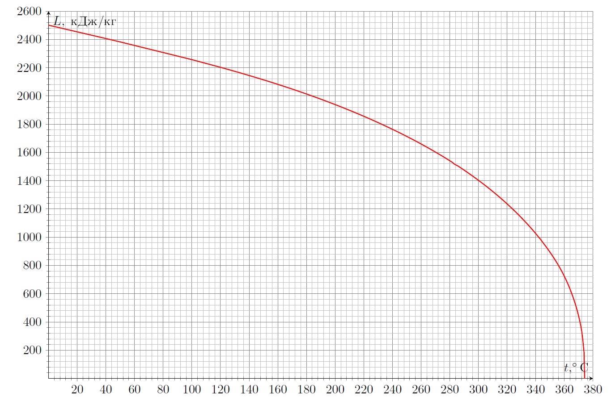
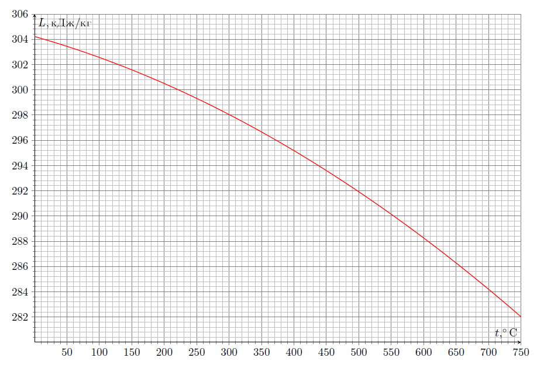
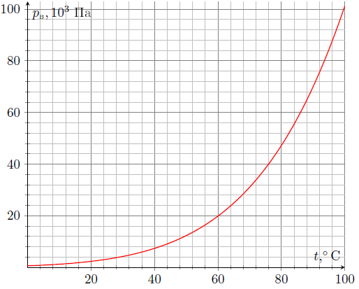
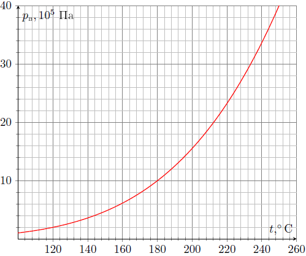
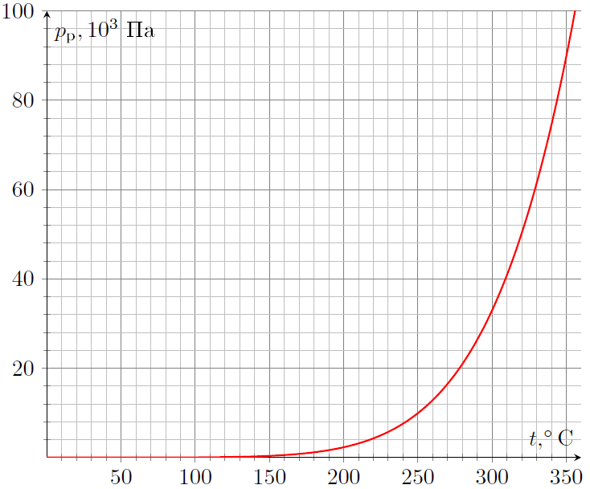
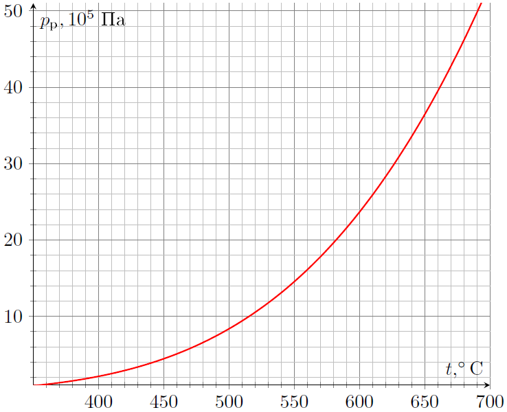

X23 (2023) — English translation
Working to increase the efficiency of steam power plants is an important part of reducing the economic costs of maintaining power plants. The development of this industry has always been limited by the complexity of the technical implementation of installations, as well as the transition of real gas into the liquid phase. Engineers formulated the following requirements for substances used in cycles: The specific heat capacity of the substance in the liquid phase must be the smallest; The critical point of a substance must be reached at high temperature and relatively low pressure; The saturated vapor pressure at the lowest temperature should not be too low; The substance must be readily available. Limitations on the heat capacity in the liquid phase and the temperature of the substance at the critical point are understandable from theoretical considerations, but the creation of a chamber that can withstand high pressure and a vacuum condenser that maintains low pressure are complex tasks from a technical point of view. Currently, there are no known substances that satisfy all of the above requirements, and therefore the idea of binary cycles was proposed - to take advantage of one coolant at high temperatures and the other at low temperatures. Binary cycles have greater efficiency than cycles with one of the substances under consideration. The idea of binary cycles is that heat exchange occurs between two substances located in different vessels. This makes it possible to implement two cycles simultaneously, while avoiding the forced supply of heat to one of the working fluids during the heat exchange process. The Rankine cycle $1-2-3-4-1$ is one of the most used in binary cycles. It consists of the following processes: $1-2$ - adiabatic expansion; $2-3$ - isothermal cooling (heat removal); $3-4$ - adiabatic compression; $4-1$ - isobaric heating. Further, unless otherwise specified, for Rankine cycles adhere to the introduced notation. Parts $\mathrm{A}$ and $\mathrm{B}$ analyze Rankine cycles with working fluids in the form of an ideal gas and water, respectively, and in parts $\mathrm{C}$ and $\mathrm{D}$, respectively, a binary gas-steam-water cycle (to be described separately) and a binary Rankine cycle with working fluids in the form of water and mercury in both cases.
Limitations on the heat capacity in the liquid phase and the temperature of the substance at the critical point are understandable from theoretical considerations, but the creation of a chamber that can withstand high pressure and a vacuum condenser that maintains low pressure are complex tasks from a technical point of view. Currently, there are no known substances that satisfy all of the above requirements, and therefore the idea of binary cycles was proposed - to take advantage of one coolant at high temperatures and the other at low temperatures. Binary cycles have greater efficiency than cycles with one of the substances under consideration. The idea of binary cycles is that heat exchange occurs between two substances located in different vessels. This makes it possible to implement two cycles simultaneously, while avoiding the forced supply of heat to one of the working fluids during the heat exchange process.
The Rankine cycle $1-2-3-4-1$ is one of the most used in binary cycles. It consists of the following processes:
Further, unless otherwise specified, for Rankine cycles adhere to the introduced notation. In parts $\mathrm{A}$ and $\mathrm{B}$, Rankine cycles with working fluids in the form of an ideal gas and water are analyzed, respectively, and in parts $\mathrm{C}$ and $\mathrm{D}$, respectively, a binary gas-steam-water cycle (will be described separately) and a binary Rankine cycle with working fluids in the form of water and mercury in both cases.
Consider the Rankine cycle with an ideal polyatomic gas. We denote the absolute temperatures at points $1$, $2$ and $4$ as $T_1$, $T_2$ and $T_4$, respectively. Let us introduce the quantities $\alpha$ and $\beta$, which determine the relationship between temperatures and pressures at points $2$ and $4$: $$\alpha=\cfrac{T_4}{T_2}\qquad \beta=\cfrac{p_4}{p_2} $$
As mentioned earlier, real gases are characterized by a transition to the liquid phase. In accordance with the requirements of engineers for the working substances of binary cycles, it was experimentally found that water and mercury compensate for each other’s shortcomings. Water does not satisfy the condition of low heat capacity in the liquid phase and has a low critical temperature, but it does satisfy the condition that the pressure in the condenser is not too low. Mercury has a low saturated vapor pressure at high temperatures and a high critical temperature at relatively low pressure, but a very low saturated vapor pressure in the condenser. In the process of heat exchange, water at temperatures close to critical exchanges heat with mercury at relatively low temperatures for mercury (about $200-300^\circ\mathrm{C}$). All subsequent parts of the problem consider cycles with water and mercury. The indices $\text{''(р)''}$ and $\text{''(в)''}$ will characterize the mercury and water cycles, respectively.
Use the notation, numerical data, and approximations described below: Universal gas constant $R=8{,}31~\text{Дж}/(\text{моль}\cdot{\text{К}})$; Adiabatic exponent $C_p/C_V=\gamma$; The specific heat capacity of water in the liquid phase is $c_\text{в}=4190~\text{Дж}/(\text{kg}\cdot{\text{К}})$ and constant; The molar mass of water is $\mu_\text{в}=18{,}02~\text{г}/\text{моль}$; The specific heat capacity of mercury in the liquid phase is $c_\text{р}=140~\text{Дж}/(\text{kg}\cdot{\text{К}})$ and constant; The molar mass of mercury is $\mu_\text{р}=200{,}59~\text{г}/\text{моль}$; Always consider the vapor (both saturated and unsaturated) of mercury to be an ideal monatomic gas. Below are the dependences of the specific heat of vaporization of mercury and water on temperature, as well as (on two graphs, in areas of relatively low and high pressures) the dependences of the pressures of saturated vapors of mercury and water on temperature:
Below are the dependences of the specific heat of vaporization of mercury and water on temperature, as well as (on two graphs, in areas of relatively low and high pressures) the dependences of the pressures of saturated vapors of mercury and water on temperature:
Dependence of the specific heat of vaporization of water on temperature

Dependence of the specific heat of vaporization of mercury on temperature

Dependence of saturated vapor pressure of water at low temperatures

Dependence of saturated vapor pressure of water at high temperatures

Dependence of saturated vapor pressure of mercury at low temperatures

Dependence of saturated vapor pressure of mercury at high temperatures

This part of the problem considers a binary cycle, which is a combination of gas and steam-water cycles. Note: in this part of the problem, both mercury and water are entirely in the gaseous phase at all times. The gas cycle $a_\text{(р)}-b_\text{(р)}-c_\text{(р)}-d_\text{(р)}-a_\text{(р)}$ for mercury vapor consists of the following processes: $a_\text{(р)}-b_\text{(р)}$ – adiabatic expansion of mercury vapor; $b_\text{(р)}-c_\text{(р)}$ – isobaric compression of mercury vapor to a state of saturation; $c_\text{(р)}-d_\text{(р)}$ – adiabatic compression of mercury vapor; $d_\text{(р)}-a_\text{(р)}$ – isothermal expansion of mercury vapor. The steam-water cycle $a_\text{(в)}-b_\text{(в)}-c_\text{(в)}-d_\text{(в)}-a_\text{(в)}$ consists of the following processes: $a_\text{(в)}-b_\text{(в)}$ – adiabatic expansion of superheated (to a temperature above the critical) water vapor; $b_\text{(в)}-c_\text{(в)}$ – isothermal compression of water vapor to a state of saturation; $c_\text{(в)}-d_\text{(в)}$ – adiabatic compression of water vapor; $d_\text{(в)}-a_\text{(в)}$ – isobaric heating of water vapor. Note: for this part of the problem, consider water vapor to be an ideal polyatomic gas whose heat capacity $C_V$ does not depend on temperature. The cycle is carried out so that the corresponding temperatures are related as follows: $$t_{a(\text{р})}=t_{d(\text{р})}=t_1\quad t_{b(\text{в})}=t_{c(\text{в})}=t_2\quad t_{b(\text{р})}=t_{a(\text{в})}=t_3\quad t_{c(\text{р})}=t_{d(\text{в})}=t_4 $$
Note: in this part of the problem, both mercury and water are entirely in the gaseous phase at all times.
The gas cycle $a_\text{(р)}-b_\text{(р)}-c_\text{(р)}-d_\text{(р)}-a_\text{(р)}$ for mercury vapor consists of the following processes:
The steam-water cycle $a_\text{(в)}-b_\text{(в)}-c_\text{(в)}-d_\text{(в)}-a_\text{(в)}$ consists of the following processes:
Note: for this part of the problem, consider water vapor to be an ideal polyatomic gas whose heat capacity $C_V$ does not depend on temperature. The cycle is carried out so that the corresponding temperatures are related as follows: $$t_{a(\text{р})}=t_{d(\text{р})}=t_1\quad t_{b(\text{в})}=t_{c(\text{в})}=t_2\quad t_{b(\text{р})}=t_{a(\text{в})}=t_3\quad t_{c(\text{р})}=t_{d(\text{в})}=t_4 $$
Consider the following data known: $$t_1=640^{\circ}\mathrm{C}\quad t_2=40^{\circ}\mathrm{C}\quad t_3=470^{\circ}\mathrm{C}\quad t_4=230^{\circ}\mathrm{C} $$
In isobaric processes, heat exchange occurs between mercury and water vapor, so that the amount of heat removed from mercury vapor in section $b_\text{(р)}-c_\text{(р)}$ is equal to the amount of heat supplied to water vapor in section $d_\text{(в)}-a_\text{(в)}$: $$-Q_{bc(\text{р})}=Q_{da(\text{в})} $$
In fact, the binary cycle discussed in part $\mathrm{B}$ works somewhat differently, since the heat capacity of water vapor depends on temperature even at constant pressure. This is due both to the fact that saturated water vapor is not actually an ideal gas, and to the fact that as the temperature of the gas increases, the contribution of the vibrational motion of molecules to their kinetic energy ceases to be negligible, therefore, in all subsequent points of the problem, it is no longer possible to consider water vapor to be an ideal gas. In fact, the molar heat capacity of water vapor $C_V$ depends on both temperature and pressure, however, within the framework of the problem when searching for the elementary amount of heat $\delta{Q}$, the dependence $C_V$ on pressure can be considered weak, and we can also use the approximation of a jump in the heat capacity: $$C_V=\begin{cases} 3R\quad\text{при}\quad{t\leq{180^{\circ}C}}\\ 7R/2\quad\text{при}\quad{t>180^{\circ}C} \end{cases} $$ Примечание: поскольку теплоёмкость $C_V$ непрерывно зависит и от температуры, и от давления, любое интегральное уравнение состояния в координатах $pT$ (к примеру, уравнение Пуассона для адиабатического процесса), применённое при температуре, большей $t_{crit}\approx200^\circ$, будет давать существенную ошибку и приводить к весьма парадоксальным результатам! При температурах, меньших $t_{crit}$, можно с хорошей точностью пользоваться уравнениями состояния даже в координатах $pT$.
In this part of the problem, the steam-water Rankine cycle $1-2-3-4-5-6-1$ is considered. The complete sequence of processes in the cycle is as follows: $1-2$ – adiabatic expansion of water vapor; $2-3$ – isothermal compression of water vapor to saturation and subsequent complete condensation; $3-4$ – adiabatic compression of water (temperature changes can be neglected); $4-5$ – isobaric heating of water to boiling point; $5-6$ – isobaric evaporation of water; $6-1$ – isobaric heating of water vapor.
In this part of the problem, the steam-water Rankine cycle $1-2-3-4-5-6-1$ is considered. The complete sequence of processes in the cycle is as follows:
The temperature at point $1$ is equal to $t_1=630^{\circ}\mathrm{C}$. At point $3$ the pressure in the system is $p_3=16~\text{кПа}$, and at point $4$ – $p_4=2{,}8~\text{Мпа}$. The cycle is carried out with mass $m_\text{в}=17~\text{kg}$.
In this part of the problem we will consider the binary Rankine cycle for mercury and water. Processes of the mercury cycle $a_\text{р}-b_\text{р}-c_\text{р}-d_\text{р}-e_\text{р}-a_\text{р}$: $a_\text{р}-b_\text{р}$ – adiabatic expansion of mercury vapor; $b_\text{р}-c_\text{р}$ – isothermal compression of mercury vapor followed by complete condensation; $c_\text{р}-d_\text{р}$ – adiabatic compression of the liquid phase of mercury (temperature changes can be neglected); $d_\text{р}-e_\text{р}$ – isobaric heating of the liquid phase of mercury; $e_\text{р}-a_\text{р}$ – complete evaporation of the liquid phase of mercury. Water cycle processes $a_\text{в}-b_\text{в}-c_\text{в}-d_\text{в}-e_\text{в}-f_\text{в}-a_\text{в}$: $a_\text{в}-b_\text{в}$ – adiabatic expansion of water vapor; $b_\text{в}-c_\text{в}$ – isothermal compression of water vapor to saturation and subsequent complete condensation; $c_\text{в}-d_\text{в}$ – adiabatic compression of water (temperature changes can be neglected); $d_\text{в}-e_\text{в}$ – isobaric heating of water to boiling point; $e_\text{в}-f_\text{в}$ – isobaric evaporation of water; $f_\text{в}-a_\text{в}$ – isobaric heating of water vapor.
In this part of the problem we will consider the binary Rankine cycle for mercury and water. Processes of the mercury cycle $a_\text{р}-b_\text{р}-c_\text{р}-d_\text{р}-e_\text{р}-a_\text{р}$:
Water cycle processes $a_\text{в}-b_\text{в}-c_\text{в}-d_\text{в}-e_\text{в}-f_\text{в}-a_\text{в}$:
The cycles are carried out consistently and in such a way that the amount of heat removed from mercury in section $b_\text{р}-c_\text{р}$ is equal to the amount of heat supplied to water vapor in section $e_\text{в}-f_\text{в}$: $$-Q_{bc(\text{р})}=Q_{ef(\text{в})} $$ Процессы $b_\text{р}-c_\text{р}$ и $e_\text{в}-f_\text{в}$ are carried out at the same temperature.
The pressures at points $b_\text{в}$, $c_\text{в}$ and $e_\text{в}$ of the water cycle are equal, respectively: $$p_{b(\text{в})}=25~\text{кПа}\qquad p_{c(\text{в})}=88~\text{кПа}\qquad p_{e(\text{в})}=1{,}2~\text{МПа} $$ Отношение масс ртути и воды $m_\text{р}/m_\text{в}=10{,}3$
Source: https://pho.rs/p/3157